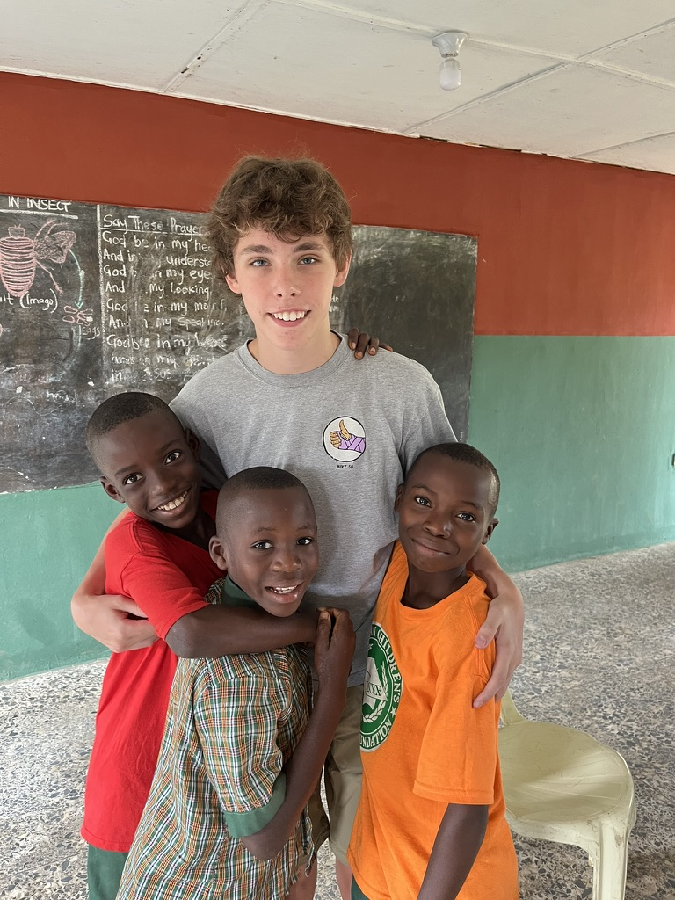
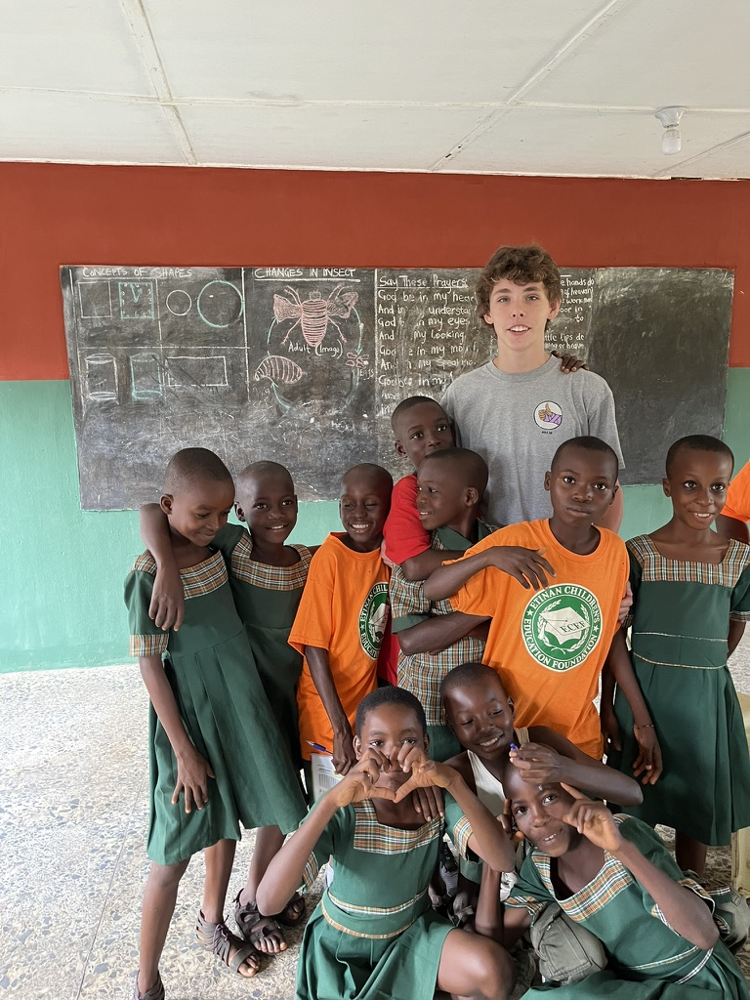
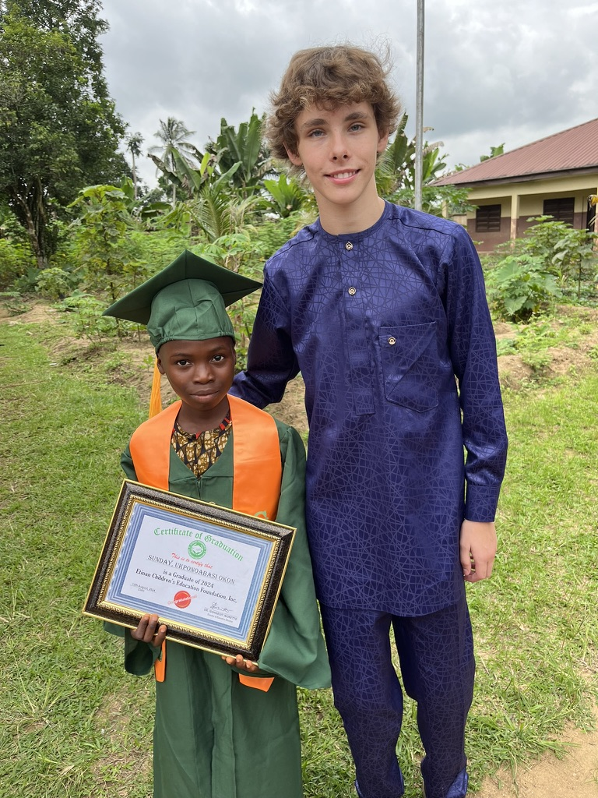

The students
About 15 students, ages 5 to 13. They were sharp, funny, and endlessly curious.
Last summer, I spent a month living and teaching in Etinan, Akwa Ibom State. This site shares the students, the classroom, and the community I got to know.

For four weeks, I worked with an elementary classroom on reading, writing, and English pronunciation. It was one of the most humbling experiences of my life, and it changed how I think about education, opportunity, and what I want to do with my career.
I traveled through the Etinan Children’s Scholarship Foundation, a short-term teaching placement that pairs volunteers with local schools that are short on staff and resources. I wanted real classroom experience before committing to a career in education, and I wanted to see what it looks like when a school does everything it can with very little.
About the tripEtinan is a town of a little over 200,000 people in Akwa Ibom State, in the “South South” region of Nigeria, near the Gulf of Guinea. It’s known for farming and craftwork, and it turned out to be one of the most welcoming communities I’ve ever spent time in. It’s also a long way, geographically and otherwise, from the classrooms I grew up in, which is part of why this trip has stuck with me.
About 15 students, ages 5 to 13. They were sharp, funny, and endlessly curious.

Torn textbooks, no reliable electricity, and a teacher stretched across far too many students.

Families who shared meals I won’t forget and did everything they could to give their kids a shot at something better.